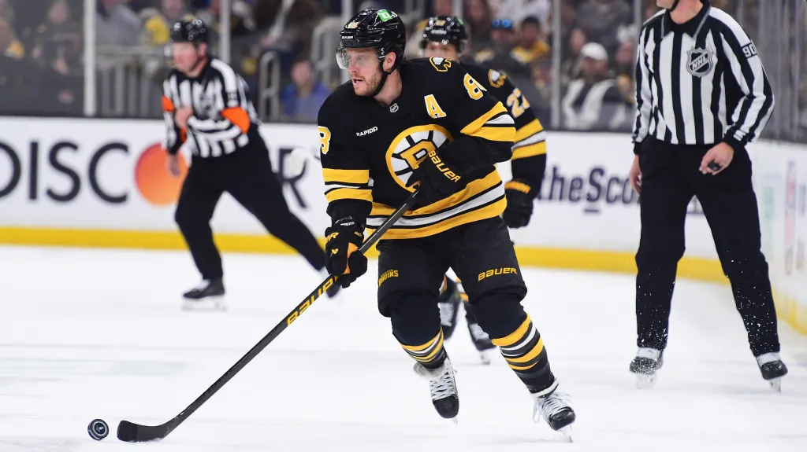

Napsala: Anet Jelínková
Datum: 5.5.2026
Největší otazník visí nad účastí bostonského dua David Pastrňák a Pavel Zacha. Pastrňák, který v základní části NHL opět překonal stobodovou hranici, se potýká s následky praskliny v třísle, která ho trápí už od listopadu. K jeho váhání přispívají i čerstvé rodinné povinnosti. Generální manažer Jiří Šlégr situaci hodnotí jako neutrální, ale sám hráč naznačil, že k jeho příjezdu by se ,,některé věci musely drasticky změnit”. Podobně je na tom Pavel Zacha, který dohrával play-off s výronem kotníku. Trenér Radim Rulík se bude muset obejít i bez několika klíčových opor ze zámoří. Zdravotní stav nepustí na šampionát Ondřeje Paláta, který i přes velkou snahu reprezentovat, dostal stopku od svého zdravotního stavu po náročné sezoně v New Jersey. Také Radim Faksa, silový útočník, se potýká s následky zranění, která mu neumožňují nastoupit v plné síle. A i Tomáš Nosek, další defenzivní specialista z NHL, se musel omluvit kvůli nedoléčeným šrámům, které vyžadují delší rekonvalescenci. Kromě omluvenek z NHL musí realizační tým řešit i aktuální ztráty probíhající v přípravě. Kvůli zranění z nominace vypadl útočník Michael Špaček ze Sparty. Šance se tak chopí mládí - místo něj byl povolán Petr Sikora z Třince. Kapitán úspěšné reprezentační dvacítky se k týmu připojí v Českých Budějovicích a pokusí se vybojovat si místo v konečné nominaci. Další změnou je příchod Kristiana Reichela, který nahrazuje Jaroslava Chmelaře. Ten po drobném zranění ze zápasu se Švýcarskem dostal týden na doléčení a o jeho dalším osudu v týmu se rozhodne později. Jasným lídrem týmu zůstává Roman Červenka. Čerstvý ,,Hokejista sezony” potvrdil svou účast a je připraven vést národní tým na jeho poslední akci pod současným trenérským štábem. ,,Pokud jsem zdravý, nedovedu si představit, že bych řekl ne,” uvedl kapitán, pro kterého bude turnaj ve Švýcarsku vrcholem sezony.

Zdroje: Oficiální Instagram @ceskyhokej, Livesport